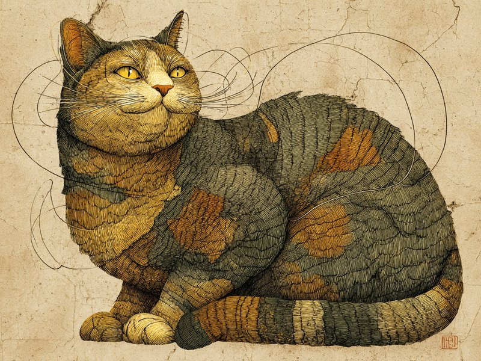

猫のゴロゴロ音は甘えている時だけでなく、痛みや不安を感じている時にも出ることがあり、自分を落ち着かせたり回復を促したりするセルフケアの役割があると考えられています。 Purring isn't just for happy moments — it may even help cats heal.
喉の奥の筋肉が、高速で振動している
猫のゴロゴロ音は、喉頭(声帯まわり)にある筋肉が1秒間に25〜150回というスピードで収縮と弛緩を繰り返すことで生まれています。呼吸のたびに空気の通り道が細かく振動し、吸うときも吐くときも途切れずに音が続くのが特徴です。この筋肉の動きは猫自身の意思でコントロールされていると考えられており、まさに「鳴らそうと思って鳴らしている」音なのです。
実は「痛い時」「不安な時」にも鳴らす
ゴロゴロ音は甘えている時や撫でられて気持ちいい時の代表的な仕草として知られていますが、実際には動物病院で怖がっている時や、出産の最中、さらには体調が悪く弱っている時にも鳴らすことが報告されています。つまりゴロゴロ音は「嬉しい」という感情表現だけでなく、自分自身を落ち着かせたり、回復を促したりするためのセルフケア行動という側面も持っていると考えられているのです。
周波数が骨や筋肉の回復を助ける?という研究
2001年に音響研究者エリザベス・フォン・ムッゲンターラー氏がネコ科44種のゴロゴロ音を分析したところ、周波数帯はおおよそ25〜150Hzに集中しており、中でも25Hzと50Hzは整形外科領域で骨折治療や骨密度維持のために使われてきた低周波振動治療の帯域と重なっていたと報告されています。猫は他の動物に比べて骨折や落下によるケガからの回復が早いとよく言われ、この「セルフ振動療法」がその一因ではないかという仮説につながっていますが、あくまで周波数帯が重なるという指摘の段階で、ゴロゴロ音そのものに治癒効果があると実証されたわけではありません。まだ仮説の域を出ない話ですが、あの気持ちよさそうな音に体を治す力まで秘めているとしたら、なんとも不思議な話です。
出典: von Muggenthaler, E. "The Felid Purr: A Healing Mechanism?" The Journal of the Acoustical Society of America, 2001. pubs.aip.org
ライオンやトラなど大型のネコ科動物は、喉の骨の構造がイエネコと異なるためゴロゴロ音を出すことができません。その代わりに大きな声で吠えることができ、これはイエネコにはできない芸当。ゴロゴロ鳴けるか、吠えられるかは、いわばネコ科の中でのトレードオフなのです。